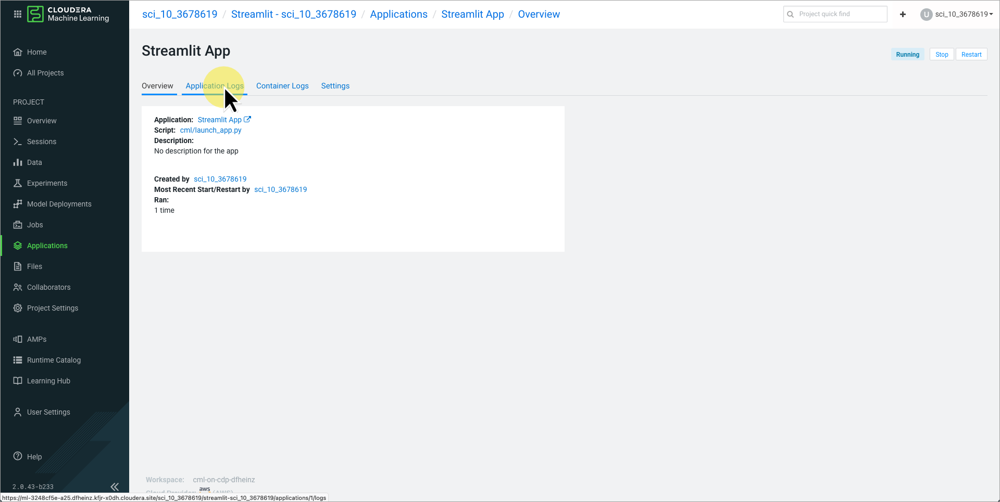

Streamlit on CML
"Streamlit turns data scripts into shareable web apps in minutes." Streamlit is a web application framework that allows data scientists to quickly build web applications to share data and analytics.
In this exercise, you will use an AMP (Applied ML Prototype) to deploy a simple Streamlit application using CML. You will learn how to deploy an AMP and how applications work in CML.
Go to CML Workspace
Begin the exercise by nagivating to your workspace.

{kind=link}
Create a New Project Using the Streamlit AMP
Creating a project from an AMP is easy.
{kind=link}
You will see a catalog of AMPs. New AMPs are being added all of the time. In addition to AMPs provided by Cloudera, you can create your own AMPs and your own AMP catalog.
{kind=link}
A dialog will popup that describes the AMP. The dialog also contains a link to the Github repository for the AMP. Viewing an AMP's repository is a good way to learn more about the AMP and how AMPs are created, in general.
{kind=link}
{kind=link}
In the project-metadata.yaml file, you can see the steps that are used to deploy the AMP. In this case, you can see that AMP runs a session to install the Python dependecies and then starts a new application called Streamlit App.
name: Streamlit
description: Run a Streamlit app inside CML.
author: Cloudera Inc.
specification_version: 1.0
prototype_version: 2.0
date: "2023-03-24"
runtimes:
- editor: Workbench
kernel: Python 3.9
edition: Standard
tasks:
- type: run_session
name: Install Dependencies
script: cml/install_dependencies.py
kernel: python3
cpu: 1
memory: 2
- type: start_application
name: Streamlit App
subdomain: streamlit
script: cml/launch_app.py
short_summary: Start Streamlit application
environment_variables:
TASK_TYPE: START_APPLICATION
{kind=link}
{kind=link}
{kind=link}
The AMP will begin building. You will see the two steps that were in the project-metadata.yaml file execute.
- Wait for AMP to complete. It will take approximately five minutes for the AMP to complete both steps.
{kind=link}
Explore the Streamlit Project
Now that the AMP has completed creating a new project, you can view the contents of the project to see what was created.
{kind=link}
The project overview shows any models or jobs that were created, the files contained in the project, and the contents of the README.md markdown file which describe the project. At the top of the overview page is the message regarding the project creation status which contains a useful link to the return to the project creation status page.
{kind=link}
{kind=link}
A new tab will open with an overview of the application deployment. The overview provides a link to the application, the script that created the application, and when the application was last started.
-
Click the Logs tab. 
-
View the log output.

{kind=link}
Logs shows the output from the application. In this case, you can see the command that was used to start the application:
!streamlit run app.py --server.port $CDSW_APP_PORT --server.address 127.0.0.1
Note
CML applications are long-running web applications. Unlike sessions, applications do not timeout from inactivity. The application must use either CDSW_APP_PORT or CDSW_READONLY_PORT as its server port.
{kind=link}
{kind=link}
{kind=link}
This is the file that was used to start the application. If you look back at the project-metadata.yaml file, you will see where it was specified in the start_application task.
{kind=link}
This is a list of all of the project sessions. Here, you can see the session used by the AMP to install the Python dependencies.
{kind=link}
Again, you see the output of the session. Similarly, you can view the application created by the AMP.
{kind=link}
{kind=link}
This opens a new tab and displays the application. The URL can be shared and viewed by others. By default, authentication for applications is enforced on all ports and users cannot create public applications. If desired, the Admin user can allow users to create public applications that can be accessed by unauthenticated users. Therefore, users will typically have to sign into the CDP environment before opening an application's URL.
{kind=link}
Modify the Application
-
Return to the Streamlit project.
-
Click Files in the project menu.
-
Compare the
app.pycode to the output of the app itself. -
Click the Open in Workbench button.
-
Change some of the markdown content and reload the app.
-
Did you need to rebuild the app?
-
Why is the first markdown block statement in a
st.markdowncall and not the second one? -
Study the
jointplotseaborn function: https://seaborn.pydata.org/generated/seaborn.jointplot.html -
Change the type of the
jointplot.
Delete the Project
{kind=link}
{kind=link}
{kind=link}
{kind=link}
Bonus
If you finish early, explore other AMPs in the AMP catalog.
End of Exercise